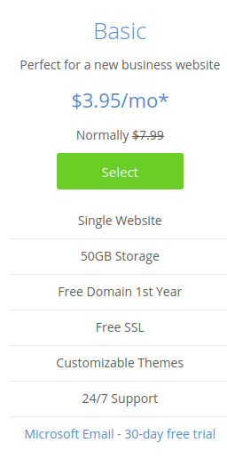
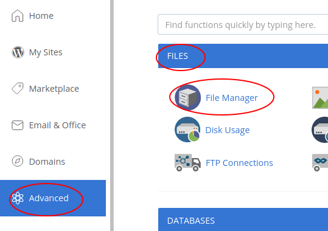

Given my goal of learning PHP and SQL, I rented a shared server on Bluehost. I wanted to create my own website from scratch using HTML. I first hosted it using Github page and Gitlab page , but these options only allow for static websites, and I wanted to interact with my readers through comments or other PHP scripts. Therefore, I opted for the cheapest offer from Bluehost since it includes all I need. Why Bluehost? Well, reviews said it was a good option among others, but there are many hosts out there, just type "list of web hosting services" on your search engine.
See the picture below for the option I chose. This price is only if you subscribe for three years. I took only one year thus it’s a bit more expensive, around 6 dollars per month.

Once your account created, the only thing you have to do is to delete what’s inside the "public_html" folder because that’s where the Wordpress site would be stored. I suggest you compress it and save it locally before deleting it, just in case you want it later. Once the "public_html" folder empty, you can store your website inside. It should soon be online accessible through the domain name you picked when registering.
You can follow the above steps through 3 ways:
1. Using FTP connection ( How to setup FTP using Filezilla )
2. Directly going to Advanced/FILES/File Manager after logging into bluehost.com which will bring you to all the files you got in your shared server (including the "public_html" folder)

3. Using ssh connection which allows you to transfer files directly from your terminal which makes everything easier ( How to ssh connect )
That's it, enjoy the process!